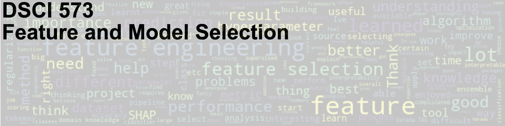

#

In this course, we will cover evaluation metrics for classification and regression, feature engineering, feature selection, feature importances, ensembles, and regularization.
Course learning outcomes#
Click to expand!
By the end of the course, students are expected to be able to
build, debug, appropriately evaluate, and refine supervised machine learning models
appropriate choose the right evaluation metric for classification and regression problems
broadly describe and carry out preliminary feature engineering
explain different feature selection methods and carry out feature selection
interpret machine learning models in terms of feature importances
explain and carry out L1- and L2-regularization
Deliverables#
Click to expand!
The following deliverables will determine your course grade:
Assessment |
Weight |
Where to submit |
|---|---|---|
Lab Assignment 1 |
15% |
|
Lab Assignment 2 |
15% |
|
Lab Assignment 3 |
15% |
|
Lab Assignment 4 |
15% |
|
Quiz 1 |
20% |
|
Quiz 2 |
20% |
See Calendar for the due dates.
Teaching team#
Click to expand!
Role |
Name |
Slack Handle |
|---|---|---|
Lecture instructor |
Varada Kolhatkar |
|
Lab instructor |
Joel Östblom |
|
Teaching assistant |
Ali Behrouz |
|
Teaching assistant |
Faeze Keshavarz |
|
Teaching assistant |
Farnoosh Hashemi |
|
Teaching assistant |
Harsh sharma |
|
Teaching assistant |
Md Shahriar Rahim Siddiqui |
|
Teaching assistant |
Mohit Pandey |
|
Teaching assistant |
Sana Ayromlou |
|
Lectures#
Format#
Click to expand!
This course will be run in person. We will meet three times every week: twice for lectures and once for the lab. You can refer to the Calendar for lecture and lab times and locations. Lectures of this course will be a combination of traditional live lecturing, a few pre-recorded videos, and class activities. The night before each lecture, the material will be made available to you.
It’s optional but highly recommended to download the appropriate datasets provided below and put them under your local lectures/data directory, and run the lecture Jupyter notebooks on your own and experiment with the code.
Lecture schedule#
This course occurs during Block 3 in the 2022/23 school year.
Lecture |
Topic |
Assigned videos |
Resources and optional readings |
|---|---|---|---|
1 |
üìπ |
||
2 |
üìπ |
||
3 |
None |
||
4 |
None |
||
5 |
None |
||
6 |
None |
||
7 |
üìπ |
||
8 |
üìπ |
Datasets#
Here is the list of Kaggle datasets we’ll use in this class.
(Optional) MARSYAS
If you want to be extra prepared, you may want to download these datasets in advance and save them under the lectures/data directory in your local copy of the repository.
Labs#
During labs, you will be given time to work on your own or in groups. There will be a lot of opportunity for discussion and getting help during lab sessions. (Usually I enjoy labs a lot. It‚Äôs also an opportunity for me to know you a bit better üôÇ.)
Installation#
We are providing you with a conda environment file which is available here.
In order to get ready for the course, we suggest that you:
clone the course repository
git clone git@github.ubc.ca:MDS-2022-23/DSCI_573_feat-model-select_students.git
or
git clone https://github.ubc.ca/MDS-2022-23/DSCI_573_feat-model-select_students.git
navigate to the repository
cd DSCI_573_feat-model-select_studentscreate the environment
conda env create -f env-dsci-573.yaml
Assuming that your environment was created successfully, you can activate it using:conda activate 573
In order to use this environment in Jupyter, you will have to install nb_conda_kernels in the environment where you have installed Jupyter (typically the base environment):
conda install -c conda-forge nb_conda_kernels
You will then be able to select this new environment in Jupyter. (ipykernel is in our course environment). For more details on this, refer to “Making environments work well with JupyterLab section” in your 521 lecture 6.
I’ve only tried installing this environment file on a couple of machines, and it’s possible that you will encounter problems with some of the packages from the yaml file when you run the commands above. This is not unusual. It often means that the package with the given version is not available for your operating system via conda yet. There are a couple of options for you when this happens:
Get rid of the line with that package from the
yamlfile.Create the environment without that package.
Activate the environment and install the package manually either with
conda installorpip installin the environment.
Note that this is not a complete list of the packages we’ll be using in the course and there might be a few packages you will be installing using conda install later in the course. But this is a good enough list to get you started.
Course communication#
Click to expand!
We all are here to help you learn and succeed in the course and the program. Here is how we’ll be communicating with each other during the course.
Clarifications on the lecture notes or lab questions#
If there is any clarification on the lecture material or lab questions, I’ll open an issue in the course repository and tag you. It is your responsibility to read the messages whenever you are tagged. (I know that there are too many things for you to keep track of. You do not have to read all the messages but please make sure to carefully read the messages whenever you are tagged.)
Questions on lecture material or labs#
If you have questions about the lecture material or lab questions please post them on the course Slack channel rather than direct messaging me or the TAs. Here are the advantages of doing so:
You’ll get a quicker response.
Your classmates will benefit from the discussion.
When you ask your question on the course channel, please avoid tagging the instructor unless it’s specific for the instructor (e.g., if you notice some mistake in the lecture notes). If you tag a specific person, other teaching team members or your colleagues are discouraged to respond. This is decrease the response rate on the channel.
Please use some consistent convention when you ask questions on Slack to facilitate easy search for others or future you. For example, if you want to ask a question on Exercise 3.2 from Lab 1, start your post with the label lab1-ex2.3. Or if you have a question on lecture 2 material, start your post with the label lecture2. Once the question is answered/solved, you can add “(solved)” tag before the label (e.g., (solved) lab1-ex2.3. Do not delete your post even if you figure out the answer on your own. The question and the discussion can still be beneficial to others.
Working during the COVID-19 global pandemic#
Click to expand!
We are working together on this course during this transition period between hybrid to in-person teaching and learning. Everyone is struggling to some extent. If you tell me you are having trouble, I am not going to judge you or think less of you. I hope you will extend me the same grace! Let’s try to be open with each other and help each other.
Here are some ground rules:
If you are unable to submit a deliverable on time, please reach out before the deliverable is due.
If you need extra support, the teaching team is here to work with you. Our goal is to help each of you succeed in the course.
If you are struggling with the material, getting back to in-person teaching and learning, or anything else, please reach out. I will try to find time and listen to you empathetically.
If I am unable to help you, I might know someone who can. UBC has some great student support resources.
Covid Safety at UBC#
Please read Covid Campus Rules.
Masks: This class is going to be in person. UBC no longer requires students, faculty and staff to wear non-medical masks, but continues to recommend that masks be worn in indoor public spaces.
Your personal health: If you are ill or believe you have COVID-19 symptoms or been exposed to SARS-CoV-2 use the Thrive Health self-assessment tool for guidance, or download the BC COVID-19 Support App for iOS or Android device and follow the instructions provided. Follow the advice from Public Health.
Stay home if you have recently tested positive for COVID-19 or are required to quarantine. You can check this website to find out if you should self-isolate or self-monitor. If you are unable to submit a deliverable on time or unable to appear for an in-person quiz, check out MDS policies on academic concession and remote quiz requests.
Your precautions will help reduce risk and keep everyone safer. In this class, the marking scheme is intended to provide flexibility so that you can prioritize your health and still be able to succeed:
All course notes will be provided online.
All homework assignments can be done and handed in online.
All exams will be held online.
Most of the class activity will be video recorded and will be made available to you.
Before each class, I’ll also try to post some videos on YouTube to facilitate hybrid learning.
There will be at least a few office hours which will be held online.
Reference Material#
Click to expand!
Books#
A Course in Machine Learning (CIML) by Hal Daumé III (also relevant for DSCI 572, 573, 575, 563)
Introduction to Machine Learning with Python: A Guide for Data Scientists by Andreas C. Mueller and Sarah Guido.
Data Mining: Practical Machine Learning Tools and Techniques (PMLTT)
Artificial intelligence: A Modern Approach by Russell, Stuart and Peter Norvig.
Artificial Intelligence 2E: Foundations of Computational Agents (2017) by David Poole and Alan Mackworth (of UBC!).
Online courses#
CPSC 330
I’m currently teaching an undergrad course on applied machine learning. Unlike DSCI 571, CPSC 330 is a semester-long course but there is a lot of overlap and sharing of notes between these courses.Machine Learning (Andrew Ng’s famous Coursera course)
Foundations of Machine Learning online course from Bloomberg.
Machine Learning Exercises In Python, Part 1 (translation of Andrew Ng’s course to Python, also relevant for DSCI 561, 572, 563)
Misc#
A Few Useful Things to Know About Machine Learning (an article by Pedro Domingos)
Metacademy (sort of like a concept map for machine learning, with suggested resources)
Machine Learning 101 (slides by Jason Mayes, engineer at Google)
Policies#
Please see the general MDS policies.